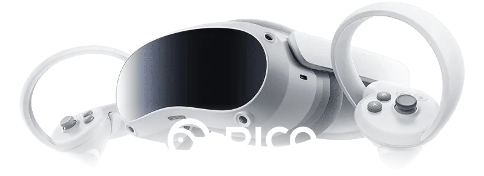
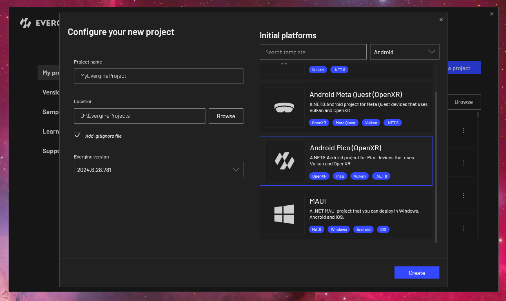
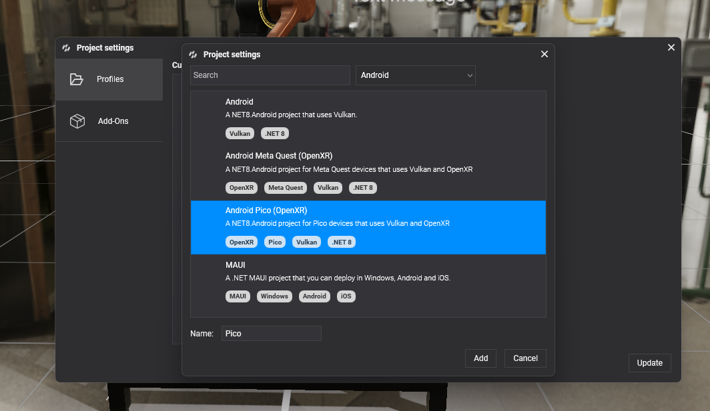

Pico

Pico headsets, such as the Pico 4, are standalone Android VR devices with inside-out tracking, their own controllers and hand tracking. Evergine targets them through OpenXR with Vulkan, in the same way as Meta Quest. The two templates share almost all of their code, so a project can have both profiles side by side, and an Android XR one too.
Create a Pico project
Select the Android Pico (OpenXR) template when you create a project:

To add Pico to an existing project, open Project Settings, add a profile and choose the same template. The profile is named Pico by default.

What the template contains
The launcher project follows the same four steps as the Meta Quest one. What differs is the vendor-specific part:
| Android Pico | Android Meta Quest | |
|---|---|---|
| OpenXR loader package | Evergine.OpenXR.Natives.Pico |
Evergine.OpenXR.Natives.Quest |
| Interaction profile | DefaultInteractionProfiles.PicoNeo3Profile |
DefaultInteractionProfiles.OculusTouchProfile |
| Extensions requested | XR_EXT_hand_tracking |
XR_EXT_hand_tracking, XR_FB_hand_tracking_aim, XR_FB_hand_tracking_mesh, plus commented passthrough and multimodal extensions |
| Manifest | pvr.app.type set to vr |
Meta VR intent category and hand tracking feature |
This is how the Pico template creates the platform, in MainActivity.cs:
openXRPlatform = new OpenXRPlatform(
new string[]
{
"XR_EXT_hand_tracking", // Enable hand tracking in OpenXR application
},
new OpenXRInteractionProfile[]
{
DefaultInteractionProfiles.PicoNeo3Profile
})
{
RenderMirrorTexture = false,
ReferenceSpace = ReferenceSpaceType.Stage,
MirrorDisplay = mirrorDisplay,
};
Note
With only XR_EXT_hand_tracking, hands are tracked and their joints are available to TrackXRArticulatedHand, but there is no hand mesh and no pinch gesture: those come from Meta extensions. Draw the hands yourself from the joint poses.
Run on the headset
Enable developer mode on the headset, connect it to the PC with a USB cable, allow USB debugging inside the headset, and start the Pico profile from Visual Studio with the headset selected as the target device.
See also
- OpenXR Platform: every
OpenXRPlatformproperty, reference spaces and interaction profiles. - Input Devices: tracking controllers and hands in the scene.